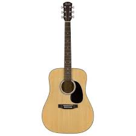

Tip bakımından elektro gitar tarzından farklı, fakat klasik gitara çok yakındır. Çoğu kişi tarafından klasik gitar ile karıştırılabilir. Klasik gitardan biraz daha şişman bir yapıya sahiptir, telleri daha keskindir çünkü tel cinsi çeliktir. Çelik tel olması, basınç sayesinde gerginliği artırır bu sayede daha yüksek ve net temiz ses çıkmasını sağlar. Genellikle 6 telli akustik gitar kullanılır, fakat 12 telli türleri de vardır. Akustik gitar partisyonları sol anahtarıyla yazılır ve tab sistemi de yaygın kullanılan nota biçimlerindendir. Daha çok solo veya ritim olarak çalınır diye bir şey demek yanlış olur çünkü ritimde de soloda da kendine özgü tarzlarını ortaya koymuşlardır. Akort sistemi bakımından klasik gitar ve elektro gitar ile aynıdır çünkü nota sistemleri de aynıdır.
